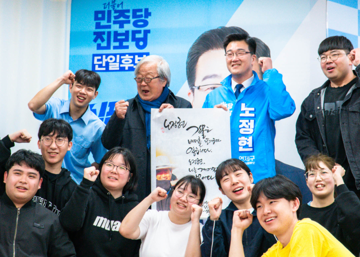
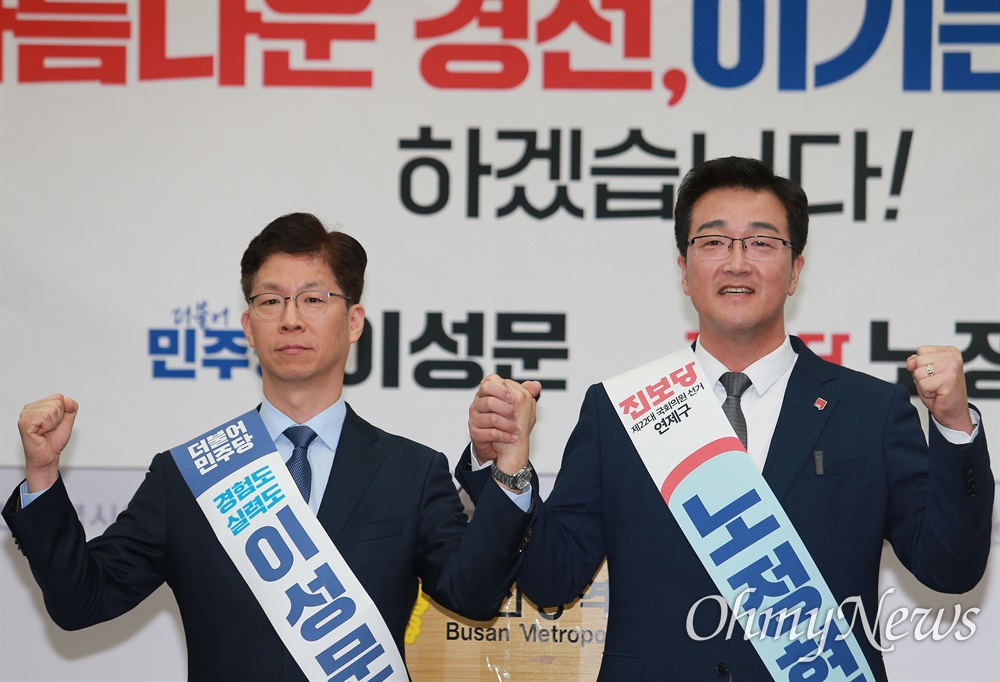
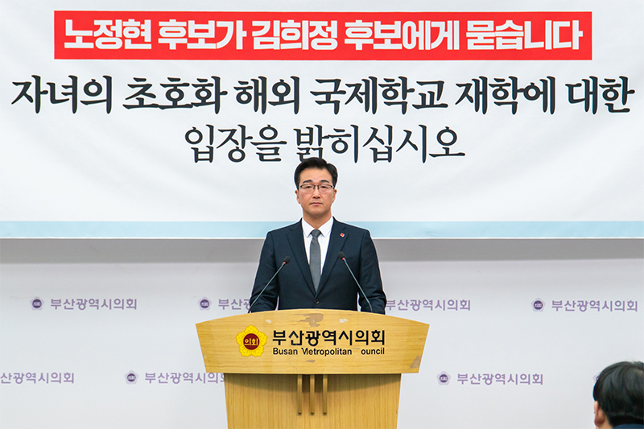
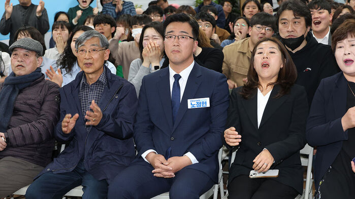

연제구의원 연임
45.58% 득표
연제구청장 예비후보
주민이 주인 되는 정치
낡은 구도를 넘어서는 연제
연제구청장 예비후보
주민이 주인 되는 정치
낡은 구도를 넘어서는 연제

진보당 부산시당위원장
총학생회 부회장 역임
2000년 삭발·단식 투쟁으로 등록금 인하 쟁취
연임 — 연제구 주민의 신뢰
민주당과 단일화 경선 승리 · 45.58% 득표
서민과 소상공인이 체감하는 경제
집 걱정 없는 연제구를 만들겠습니다
누구도 소외되지 않는 복지 연제
구청장이 아닌 주민이 주인인 구정
기후위기에 대응하는 친환경 도시





새해를 맞아 연제구 곳곳을 달리며 주민과 함께

민주당·진보당 단일후보 노정현 선거 캠페인 송

제22대 총선 유권자 약속 영상

바람길숲편 — 연제를 맑게 만드는 소리